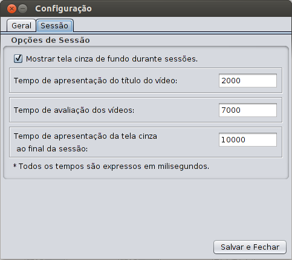

Esta janela permite a customização de diretórios padrões e a modificação das fases de apresentação de sessões subjetivas.
O diretório de usuário é a localização do programa em si. O diretório da base de vídeos é o local onde os vídeos originais estão armazenados. O diretório de novos vídeos é o local onde os novos vídeos serão armazenados. O diretório de ferramenta contém os executáveis das ferramentas externas (blur, block, netsim, raffle, metric, mplayer, ffmpeg, etc.). O diretório de arquivos de degradação armazenam, por sua vez, os arquivos de degradação gerados na ferramenta RaffleTool.
Também é possível modificar algumas opções da sessão subjetiva, como por exemplo, habilitar e desabilitar a tela de fundo enquanto a sessão está em andamento; modificar os intervalos de tempo de apresentação de título de vídeo, de avaliação de vídeo e tempo de apresentação da tela de fim de sessão.
